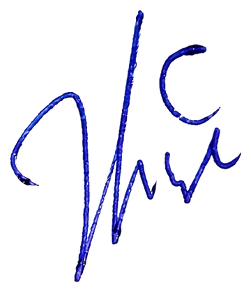

Certificate not found. Double-check the link, or contact support if you believe this is an error.
This certificate has been revoked by Global Market School and is no longer valid. Contact support if you believe this is an error.
This certifies that
has successfully completed the curriculum — a program in Stock Market & Forex Trading — and passed its certification assessment, demonstrating proficiency in both disciplines.
